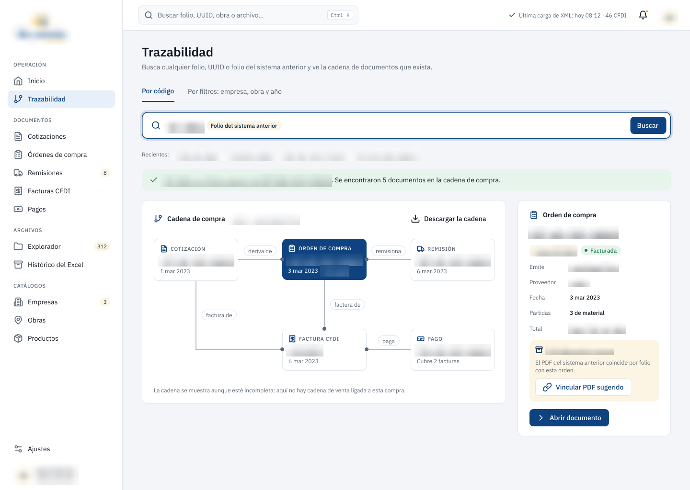
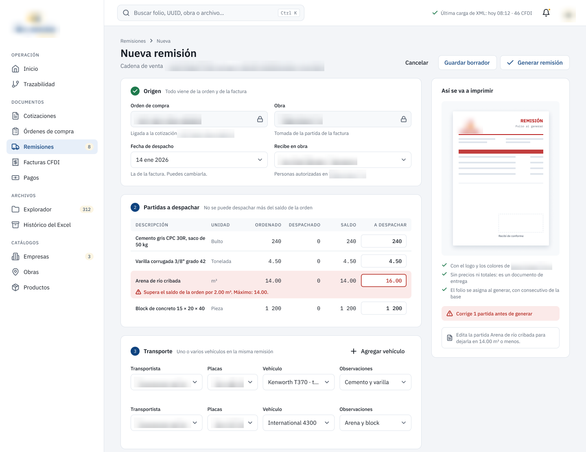
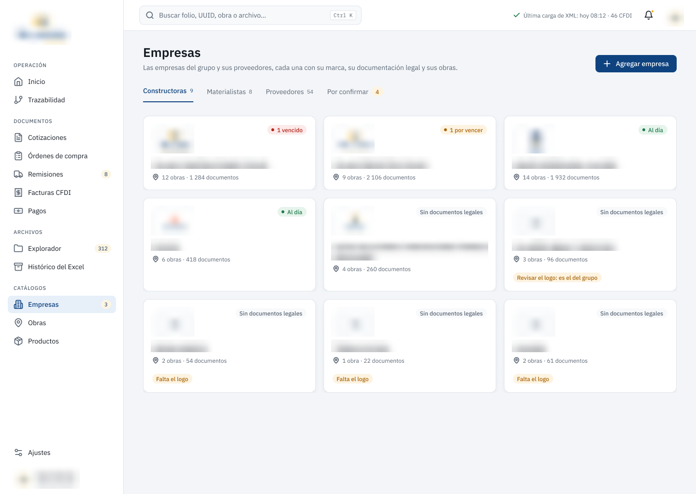
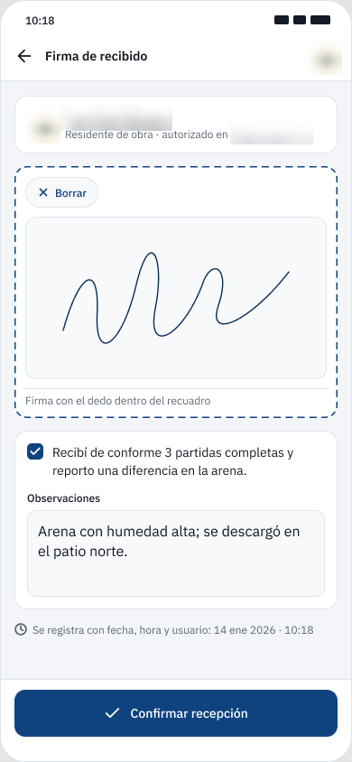

Caso de estudio
Del Excel de 7.000 líneas a un sistema de trazabilidad fiscal
Un grupo de 17 empresas del sector construcción en México operaba toda su documentación comercial
desde un solo archivo .xlsm. Este es el sistema que diseñé y construí para
reemplazarlo.
En 30 segundos
- Problema
- 17 empresas operaban toda su documentación comercial desde un Excel con cerca de 7.000 líneas de VBA, con folios que colisionaban y sin trazabilidad entre documentos.
- Qué hice
- Ingeniería inversa del legado, modelado de las dos cadenas de compraventa, validación de los datos de origen contra los comprobantes fiscales y un sistema web que lo reemplaza.
- Resultado
- Cualquier factura se recorre hasta su cotización de origen, con folios sin colisiones y las 17 empresas sobre un solo modelo. La versión 2 está en aprobación con el cliente.
- Stack
- Python · FastAPI · PostgreSQL · SQLAlchemy · Alembic · Next.js 16 · React · Docker
El problema
Diecisiete empresas relacionadas gestionaban cotizaciones, órdenes de compra, remisiones y facturas dentro de un único libro de Excel con macros, en uso diario.
Antes · un .xlsm compartido
- 24 módulos VBA, cerca de 7.000 líneas y 23 hojas de cálculo
- Folios con
MAX + 1: dos capturas al mismo tiempo, el mismo número - De qué cotización venía una factura solo lo sabía quien la capturó
- Catálogos incompletos; las abreviaturas correctas estaban enterradas en una función VBA
Después · un sistema web auditable
- 22 tablas, 35 endpoints y 15 pantallas sobre PostgreSQL
- Folios con secuencias de la base de datos: sin colisiones
- Cualquier factura se recorre hasta su cotización de origen
- Las 17 empresas sobre un solo modelo, sin duplicar la lógica
Las restricciones
La fuente de verdad es fiscal
Un CFDI timbrado no se corrige: se conserva íntegro. Todo lo demás vive aparte.
17 empresas, un modelo
Cada razón social con sus folios, su branding y sus contrapartes, sin 17 variantes de código.
Operación en marcha
El Excel siguió en uso: la migración tenía que poder repetirse sin duplicar nada.
Las dos cadenas
Al modelar el flujo junto con el cliente y contrastarlo con los datos reales aparecieron dos cadenas de compraventa encadenadas: el grupo compra en una y vende en la otra.
Qué construí
Ingestor de CFDI
Lee el XML y el Timbre Fiscal Digital. Reprocesar el mismo archivo no crea un duplicado, y cada concepto se clasifica como material o servicio.
Pantalla de trazabilidad
Dada una factura, recorre la cadena hasta la cotización de origen: cada eslabón con su documento, folio y fecha.
Generador documental
Las cinco plantillas del Excel, replicadas celda por celda con el branding de cada empresa y sin el límite de ítems de la macro.
Cómo se ve
Antes de programar la segunda versión diseñé la interfaz en Figma, pantalla por pantalla. Estas son capturas de ese prototipo; los nombres de empresas, obras y personas, los folios y los montos aparecen desenfocados.




El modelo de datos
Folios con secuencias reales de PostgreSQL en lugar de MAX + 1, trazabilidad con una
consulta recursiva, vistas de saldo y triggers de indexado. Probarlo contra la base
real, y no contra datos de prueba, sacó tres errores que un entorno limpio no muestra:
Columna angosta
Los valores reales no cabían.
Filas duplicadas
Un JOIN mal cardinalizado.
Recursión infinita
Una cadena documental con un ciclo.
Los tres se corrigieron antes de la carga definitiva.
La decisión de fondo
La factura es la fuente de verdad. Los datos fiscales nunca se teclean: salen del CFDI. La captura se limita a lo que el comprobante no trae: la obra, el transporte y las cantidades despachadas.
Para llegar ahí pregunté antes de suponer. Varias cosas que parecían datos sucios eran reglas reales del negocio: una obra la trabajan varias constructoras y en una obra firma más de una persona.
Si un dato ya existe en un documento oficial, volver a teclearlo solo abre la puerta a errores.
Decisiones técnicas y por qué
Archivos validados por números mágicos
La extensión la controla quien sube el archivo; los primeros bytes, no.
Nombre de archivo derivado del RFC
El nombre original nunca toca el disco: sin path traversal ni choques entre empresas.
Sesión por cookie
Basic Auth reenvía la credencial siempre y no permite cerrar sesión; la cookie es revocable.
SQL explícito, no ORM completo
En un dominio fiscal quiero leer y auditar la consulta exacta que se ejecuta.
Entorno reproducible
docker-compose, devcontainer y scripts para Windows y Linux desde el primer día.
El porqué, por escrito
15 especificaciones por módulo y una bitácora de decisiones dentro del repositorio.
Cómo trabajé con la IA
Lo construí con Claude Code, trabajando solo. Un año antes mi terreno era HTML, CSS y JavaScript. El método fue este:
-
Reglas por escrito
Las reglas de negocio y fiscales viven en un
CLAUDE.mdversionado, no en una conversación. - Dirijo y reviso Cada decisión pasa por mí antes de quedarse.
- Verifico contra datos reales Probar contra la base real sacó errores que un entorno limpio no muestra.
Uso el mismo patrón en mis otros proyectos, como la calculadora de nómina y MiComercializadora.
Resultados
Estado actual: construido y probado con datos reales. La versión 2, diseñada en Figma, está en aprobación con el cliente; todavía no está en producción.
¿Tienes un Excel que ya no aguanta?
Es el problema que más me gusta resolver.